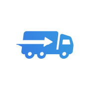
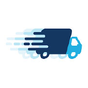
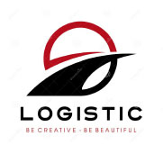

Je definieert een concept voor een interactief mediaproduct als antwoord op het probleem van de klant.
WOORDEN
Truckerdirect
Iets met een pijl net zoals fedex Iets met een vrachtwagen
Iets vrolijk met een vrachtwagen Pet truck en een pijl
TRUCKER DIRECT
Weg Kentekenbord
Stuur
LOGO ONDERZOEK
Eerst heb ik voorbeelden van logo's gezocht wat bij de woorden opkwam. Wat mij het meest opviel was dat ze veel op elkaar lijken. Hier een selectie van voorbeelden.



VERSCHILLENDE SITES
Analyseer een aangereikte voor gestructureerde design challenge en doelgroep door een debriefing te maken.
1. De eerste site heb ik gevonden via INSTAGRAM. Dit design vond ik sterk vanwege de kleuren die een sterk contrast geven. Ook is het duidelijk op elke pagina waar die voor doelt.
2. De tweede is de UBER website. Waarom ik daar inspiratie in vond is vanwege acties die de gebruiker moet uitvoeren om het eten op de juiste bestemming te krijgen. Het is ook net anders gedaan en het leek me een uitdaging om met deze functie te experimenteren.